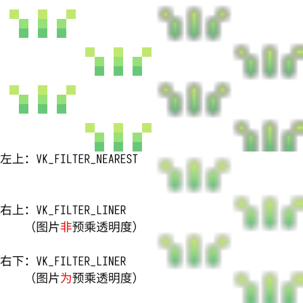
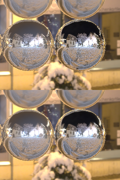
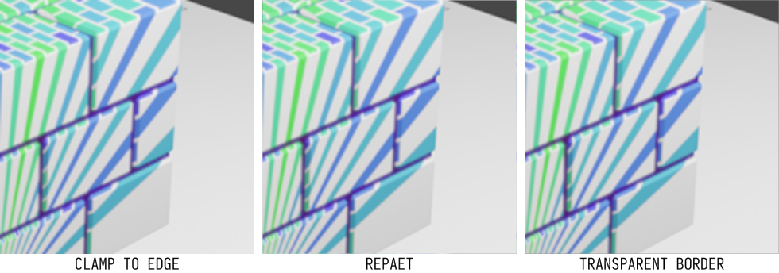
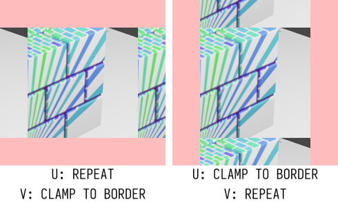
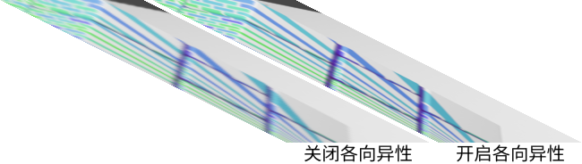
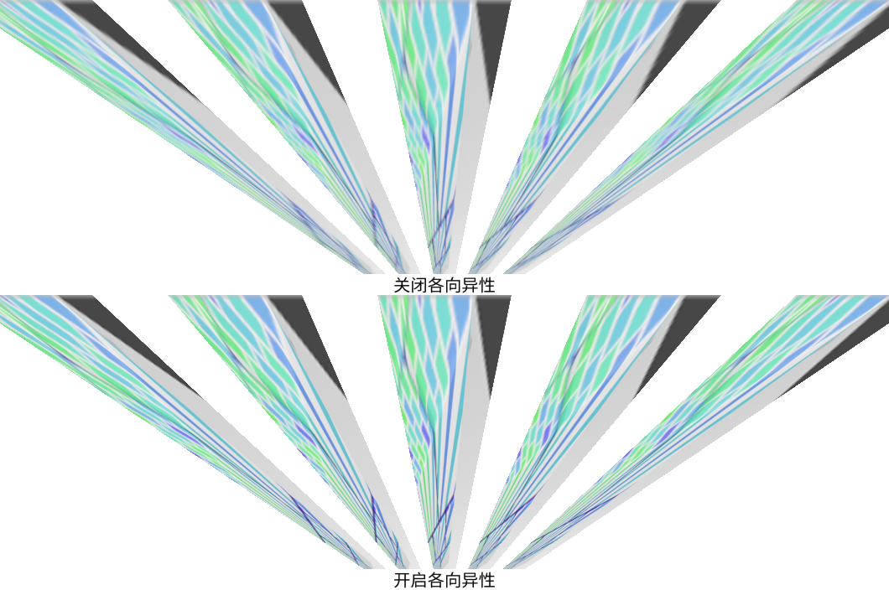
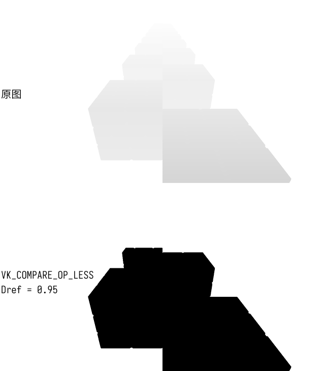

Ch3-7 采样器
Sampler
采样器（VkSampler）用于指定采样方式。
采样方式包括如何读取图像数据、滤波方式，以及一系列其他变换，使用不同的采样器以满足对图像的不同使用要求。
创建采样器
用vkCreateSampler(...)创建采样器：
VkResult VKAPI_CALL vkCreateRenderPass(...) 的参数说明 |
|
|---|---|
VkDevice device |
逻辑设备的handle |
const VkSamplerCreateInfo* pCreateInfo |
指向VkSampler的创建信息 |
const VkAllocationCallbacks* pAllocator |
|
VkSampler* pSampler |
若执行成功，将采样器的handle写入*pSampler |
struct VkSamplerCreateInfo 的成员说明 |
|
|---|---|
VkStructureType sType |
结构体的类型，本处必须是VK_STRUCTURE_TYPE_SAMPLER_CREATE_INFO |
const void* pNext |
如有必要，指向一个用于扩展该结构体的结构体 |
VkSamplerCreateFlags flags |
|
VkFilter magFilter |
在图像放大时的滤波方式 |
VkFilter minFilter |
在图像缩小时的滤波方式 |
VkSamplerMipmapMode mipmapMode |
Mipmap模式 |
VkSamplerAddressMode addressModeU |
指定采样坐标的u分量（对应通常的x分量）超出标准化坐标的[0,1)范围时的寻址模式 |
VkSamplerAddressMode addressModeV |
指定采样坐标的v分量（对应通常的y分量）超出标准化坐标的[0,1)范围时的寻址模式 |
VkSamplerAddressMode addressModeW |
指定采样坐标的s分量（对应通常的z分量）超出标准化坐标的[0,1)范围时的寻址模式 |
float mipLodBias |
Mipmap的LOD（level of detail，细节等级）偏移 |
VkBool32 anisotropyEnable |
是否开启各向异性采样 |
float maxAnisotropy |
启用各向异性采样时，将各向异性数值钳制到不超过该值 |
VkBool32 compareEnable |
若贴图格式为深度格式，是否与引用值比较（见后文） |
VkCompareOp compareOp |
若贴图格式为深度格式，并与引用值比较，指定比较方式 |
float minLod |
容许的LOD的最小值，LOD被钳制到不小于该值 |
float maxLod |
容许的LOD的最大值，LOD被钳制到不大于该值 |
VkBorderColor borderColor |
若任意方向上的寻址模式是VK_SAMPLER_ADDRESS_MODE_CLAMP_TO_BORDER，指定边框颜色（border color） |
VkBool32 unnormalizedCoordinates |
是否使用非标准化贴图坐标进行采样 |
-
通常使用标准化坐标，整张图像的贴图坐标范围为0~1，以2D图像为例，左上角为
{0.f, 0.f}，右下角为{1.f, 1.f}。
而使用非标准化坐标采样时（unnormalizedCoordinates为VK_TRUE），整张图像的贴图坐标范围为[0, 贴图大小)。
使用非标准化坐标时，对滤波方式有限制，且compareEnable必须为VK_FALSE，这里不做赘述，有兴趣请自行参考官方文档。
接下来先对VkSampler进行封装，再逐一解说其他创建参数。
封装为sampler类
向VKBase.h，vulkan命名空间中添加以下代码：
class sampler { VkSampler handle = VK_NULL_HANDLE; public: sampler() = default; sampler(VkSamplerCreateInfo& createInfo) { Create(createInfo); } sampler(sampler&& other) noexcept { MoveHandle; } ~sampler() { DestroyHandleBy(vkDestroySampler); } //Getter DefineHandleTypeOperator; DefineAddressFunction; //Non-const Function result_t Create(VkSamplerCreateInfo& createInfo) { createInfo.sType = VK_STRUCTURE_TYPE_SAMPLER_CREATE_INFO; VkResult result = vkCreateSampler(graphicsBase::Base().Device(), &createInfo, nullptr, &handle); if (result) outStream << std::format("[ sampler ] ERROR\nFailed to create a sampler!\nError code: {}\n", int32_t(result)); return result; } };
滤波方式
版本要求 |
VkFilter 的枚举值 |
|---|---|
1.0 |
VK_FILTER_NEAREST 表示使用临近滤波（有明显锯齿），适用于像素风游戏等比放大 |
1.0 |
VK_FILTER_LINER 表示使用线性插值滤波 |
下面展示了对同一张透明背景的图片（原图大小16x16像素），使用两种不同插值方式渲染到16倍大小的结果：

毕竟放大了16倍，线性插值的结果显得很糊。
但是临近滤波是没有颜色过渡的，所以若不是编写像素风游戏或图像处理软件，通常你会希望使用VK_FILTER_LINER。
值得注意的是，如果你打算使用线性插值，且被渲染的图像有透明区域，那么被渲染的图像是否为预乘透明度会导致不同的结果（这在白色背景上尤为明显），具体参见//TODO Ch8-1 预乘透明度。
图中右下角的效果可能显得仍旧不够平滑，这可以通过使用sRGB格式的颜色附件解决，具体参见//TODO Ch8-7 HDR与sRGB色彩空间。
版本要求 |
VkSamplerMipmapMode 的枚举值 |
|---|---|
1.0 |
VK_SAMPLER_MIPMAP_MODE_NEAREST 表示直接采样单张最接近所需LOD的mipmap |
1.0 |
VK_SAMPLER_MIPMAP_MODE_LINEAR 表示根据LOD等级选择两张mipmap进行线性插值 |
在图像的横纵两个方向上使用线性插值的滤波方式叫双线性滤波（bilinear filtering）。
若minFilter为VK_FILTER_LINER且mipmapMode为VK_SAMPLER_MIPMAP_MODE_LINEAR，则称为三线性滤波(trilinear filtering)。
通常而言我总是建议你使用VK_SAMPLER_MIPMAP_MODE_LINEAR。
若你需要使用VK_SAMPLER_MIPMAP_MODE_NEAREST，会出现“图像被渲染到1/3.1的长宽，却采样1/4长宽的mipmap”的情况，但通常你会想要精度更高的mipmap，这可以通过设置mipLodBias实现。另外注意，如果图像被渲染到正好1/3的长宽，采样1/2长宽还是1/4长宽的mipmap为实现特定。
细节等级
Mipmap的大小为原图像长宽 / (mip等级 + 1)，图像的LOD（level of detail）决定了要采样哪个mip等级的mipmap。
LOD可以在着色器中显式指定（采样时使用GLSL内置的textureLod(...)函数），也可以被隐式计算。
对于隐式计算，Vulkan官方标准中记载的LOD计算公式比较难懂，这里给个大致概念：
如果一张图像被渲染到其原本长宽的1/2，那么采样LOD等级为1（等级为0的是原图）的mipmap，如果长宽缩放比例不等，选择精度更高的数值为LOD（例如，长缩放到1/2，宽不变，则采样LOD等级为0）。
实际情况是图像可能会有更复杂的变形，因此LOD等级是通过微分运算确定的。
VkSamplerCreateInfo中的mipLodBias、minLod、maxLod既适用于显式指定的LOD，也适用于隐式计算的LOD。
如果你不需要钳制LOD，应将minLod设置为0，maxLod设置为VK_LOD_CLAMP_NONE。
将mipLodBias设置为正值会采样精度更低（尺寸更小）的mipmap，负值则相反。
有时候你会希望采样精度更低的mipmap，比如下图就是个应用实例：

图中实现了基于图像的BRDF光照（这意味着被采样的mipmap非原图的缩小版本，而是对原图积分得到的环境贴图，没听说过的话，你姑且可以粗略地理解为是原图的模糊版本），下半张图像应用了mipLodBias = 0.2f。
这里的LOD等级为在着色器中显式指定，与粗糙度存在映射关系，应用0.2的mipLodBias相当于将粗糙度一概增加一些。
下半张图的光斑更明显，但是锯齿感显著减弱（尤其是小球右上角的那串“节日彩灯”）。
寻址模式
寻址模式（VkSamplerAddressMode），也称wrapping mode，决定当用于采样的标准化坐标超出[0,1)范围时的采样结果。
版本要求 |
VkSamplerAddressMode 的枚举值 |
|---|---|
1.0 |
VK_SAMPLER_ADDRESS_MODE_REPEAT 相当于将坐标取余到[0,1)范围内 |
1.0 |
VK_SAMPLER_ADDRESS_MODE_MIRRORED_REPEAT 相当于将坐标取余到[0,1)范围内，然后用1减去该值（大致可理解为如此计算） |
1.0 |
VK_SAMPLER_ADDRESS_MODE_CLAMP_TO_EDGE 相当于将坐标钳制到[0,1)范围内 |
1.0 |
VK_SAMPLER_ADDRESS_MODE_CLAMP_TO_BORDER 相当于将超出[0,1)范围时的采样结果设定为特定颜色 |
1.2 |
VK_SAMPLER_ADDRESS_MODE_MIRROR_CLAMP_TO_EDGE 相当于将负值坐标反转（正值则不变）并钳制到[0,1)范围内 |
-
如果你在意如何钳制到“小于等于1”，采样操作的底层实现是先计算出对应的整数坐标，取得色值（然后再插值，如果是线性滤波的话），整数坐标范围为[0, 贴图大小)，因为是整数所以等价于[0, 贴图大小 - 1]，根据与标准化坐标的映射关系，整数坐标无法为贴图大小即是钳制到“小于等于1”。
下图展示了在U和V方向运用各个寻址模式的效果，每个单元左上角的贴图坐标为{-0.25, -0.25}，右下角为{1.25, 1.25}：
VK_SAMPLER_ADDRESS_MODE_REPEAT和VK_SAMPLER_ADDRESS_MODE_MIRRORED_REPEAT分别是重复和镜像重复的效果。
一般而言，如果你需要渲染整张图像，那么VK_SAMPLER_ADDRESS_MODE_CLAMP_TO_EDGE会是你期望的寻址模式，这种寻址模式的效果可以简述为“从边界延伸”，在渲染坐标不是整数时，这可以防止因插值引起的溢色（color bleeding）。下面的对比图中，图像被整个渲染到其原先的两倍大小： -
可以看到REPEAT一图右下角有灰边，来源于顶部的灰色。
-
TRANSPARENT BORDER一图中使用透明黑（rgba全0）为边框颜色，插值会导致半透明的灰边。
在U和V方向上的寻址模式不同时，若其中一个方向上的寻址模式设定为VK_SAMPLER_ADDRESS_MODE_CLAMP_TO_BORDER，则只要该方向上的采样坐标出界，便应用边框颜色（border color），如下图所示。
其中，边框颜色的可选项：
版本要求 |
VkBorderColor 的枚举值 |
|---|---|
1.0 |
VK_BORDER_COLOR_FLOAT_TRANSPARENT_BLACK 表示边框颜色为{ 0.0, 0.0, 0.0, 0.0 } |
1.0 |
VK_BORDER_COLOR_INT_TRANSPARENT_BLACK 表示边框颜色为{ 0, 0, 0, 0 } |
1.0 |
VK_BORDER_COLOR_FLOAT_OPAQUE_BLACK 表示边框颜色为{ 0.0, 0.0, 0.0, 1.0 } |
1.0 |
VK_BORDER_COLOR_INT_OPAQUE_BLACK 表示边框颜色为{ 0, 0, 0, 1 } |
1.0 |
VK_BORDER_COLOR_FLOAT_OPAQUE_WHITE 表示边框颜色为{ 1.0, 1.0, 1.0, 1.0 } |
1.0 |
VK_BORDER_COLOR_INT_OPAQUE_WHITE 表示边框颜色为{ 1, 1, 1, 1 } |
-
“OPAQUE”和“WHITE”仅说明a和rgb分量上的数值是否为1，而数值为1不代表100%不透明或颜色饱和。通常而言，如果你的图像附件为UNORM/SRGB格式，那么你的片段着色器输出的浮点数色值的有效范围在0.f~1.f之间，因此，处理整数格式色值的时候，会在着色器中除以255.f，这种情况下，上文的VK_BORDER_COLOR_INT_OPAQUE_WHITE对应的色值就是
{ 1/255.f, 1/255.f, 1/255.f, 1/255.f }。基于这一点而言，如果图像的image view的格式中带有UINT或SINT字样，你难以通过VK_BORDER_COLOR_INT_OPAQUE_BLACK或VK_BORDER_COLOR_INT_OPAQUE_WHITE实现黑色或白色边框色（而带FLOAT字样的因底层数据非整形同样不必考虑）。
你当然也可以使用自定义颜色，步骤：
1.创建逻辑设备时，启用扩展VK_EXT_custom_border_color，并开启相应特性（在获取设备特性前，在VkPhysicalDeviceFeatures的pNext链中加入VkPhysicalDeviceCustomBorderColorFeaturesEXT，之后创建设备的时候不需要变更pNext链）。
2.VkSamplerCreateInfo::borderColor指定为VK_BORDER_COLOR_FLOAT_CUSTOM_EXT或VK_BORDER_COLOR_INT_CUSTOM_EXT。
3.填写VkSamplerCustomBorderColorCreateInfoEXT结构体。注意其中format各通道的位数（8/16/32等）不必与图像的image view一致，但数字格式（UINT/UNORM等）需要按前述规则匹配VK_BORDER_COLOR_FLOAT_CUSTOM_EXT或VK_BORDER_COLOR_INT_CUSTOM_EXT。
4.将VkSamplerCustomBorderColorCreateInfoEXT加入VkSamplerCreateInfo的pNext链。
VK_SAMPLER_ADDRESS_MODE_MIRROR_CLAMP_TO_EDGE的效果实质上就是在[-1, 1)范围内发生镜像，在此之外则从边界延伸。因此在Unity等游戏引擎中，对应这一寻址模式的wrapping mode被称为“MirrorOnce”。这种寻址模式便于渲染对称图像并防止溢色。
下图左上角的贴图坐标为{-1.25, -1.25}，右下角为{1.25, 1.25}：
各向异性采样
各向异性有助于改善图像倾斜时的采样效果：
 
由微分计算出图像在x和y方向上的放缩比例ρx和ρy，记其中较大者为ρmax，较小者为ρmin，各项异性数值即为ρmax/ρmin。
各项异性数值会被钳制到VkSamplerCreateInfo::maxAnisotropy和VkPhysicalDeviceProperties::limits::maxSamplerAnisotropy中的较小值，因为ρmax/ρmin的最小值为1，所以maxAnisotropy不得小于1。若maxAnisotropy为1，则效果理应等同于关闭各向异性采样。
Important
各向异性采样的底层实现的细节，在不同的显卡驱动中不同。
滤波方式可能因此收到影响。比如，在开启各向异性采样时，英特尔核显可能会无视minFilter和magFilter，总是应用线性滤波。
各向异性采样的实际效果也可能因显卡的不同有所差异。
比较深度值
基于不同的目的，有两种不同的采样深度贴图的方式：
1.将深度贴图作为单色贴图采样。
2.将深度值与引用值比较，根据比较结果返回0.f或1.f。如果应用线型滤波，插值是对比较结果进行的，而非先对深度值做插值再比较，因而会返回[0, 1]区间内的数值。
后一种方式可以用来实现最为简单的阴影。
下面两张图，第一张图是直接可视化深度贴图（作为单色贴图采样，将采样结果的r分量赋值给输出颜色的rgb三个分量以显示为灰色），第二张图是与引用值0.95比较，使用的比较方式为VK_COMPARE_OP_LESS，即引用值小于深度值时返回1.f，否则返回0.f，采样结果被赋值给输出颜色的rgb三个分量。

虽然你八成用不着前述的第2种方式，这里姑且做下大致的步骤说明：
1.设置VkSamplerCreateInfo::compareEnable为VK_TRUE，设置比较方式（VkSamplerCreateInfo::compareOp）。
2.着色器中，将带采样器的贴图类型指定为sampler2DShadow（注：带Shadow后缀的类型专用于与引用值进行比较的采样方式。将深度贴图作为单色贴图采样时应使用sampler2D等不具Shadow后缀的类型）。如果你要分别声明贴图和采样器，单独的采样器类型应指定为samplerShadow。
3.使用texture(...)函数进行采样，首个参数为带采样器的贴图，后一个参数为vec3类型，其中uv分量为贴图坐标，第三个分量为引用值（随你设定，不必是常量，与其他各种设置无关），采样得到的结果是浮点数标量。